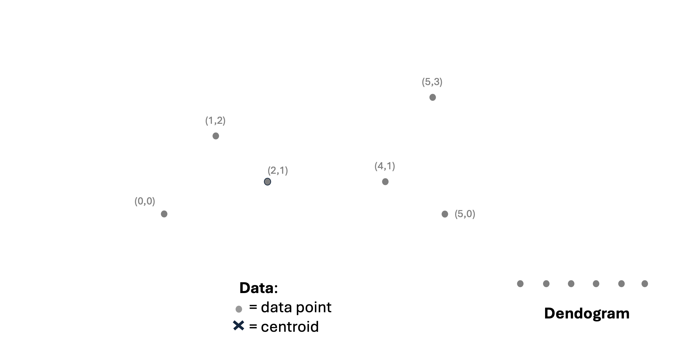
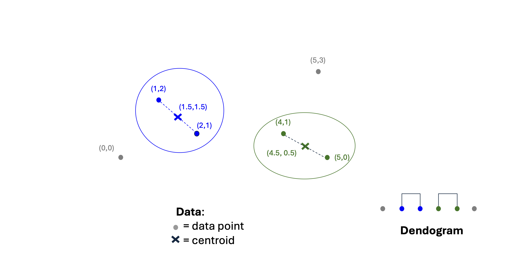
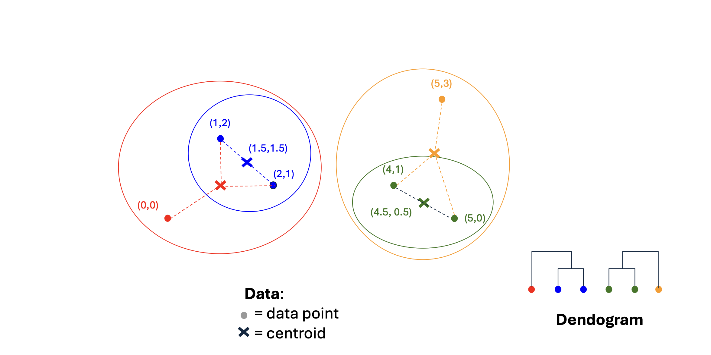
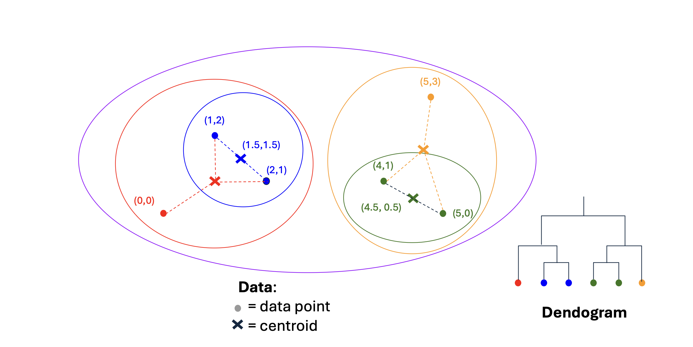

1. Introduction to Hierarchical Clustering
이전 포스트에서 우리는 클러스터링의 기본 개념과 데이터가 위치한 공간(유클리드 vs. 비유클리드)의 특성을 살펴보았습니다. 이번 포스트에서는 대표적인 군집화 기법 중 하나인 계층적 군집화(Hierarchical Clustering)에 대해 깊이 있게 다루어 보겠습니다.
계층적 군집화의 핵심 연산은 매우 직관적입니다: “가장 가까운(nearest) 두 클러스터를 반복적으로 병합(Merge)하는 것”입니다. 이 단순한 아이디어를 실제 알고리즘으로 구현하기 위해서는 다음 세 가지 근본적인 질문에 답해야 합니다:
- How to represent a cluster?: 다수의 데이터 포인트로 이루어진 클러스터를 수학적/구조적으로 어떻게 “표현”할 것인가?
- How to determine the nearness of clusters?: 두 클러스터 간의 “가까움(거리)”을 어떻게 정의하고 측정할 것인가?
- When to stop merging clusters?: 클러스터를 하나로 합치는 과정을 언제 멈출 것인가?
2. Hierarchical Clustering in Euclidean Space
데이터가 유클리드 공간에 존재할 때, 앞선 질문들에 대한 대답은 비교적 명확해집니다. 유클리드 공간은 기하학적인 위치와 평균 연산이 성립하기 때문입니다.
Cluster Representation (클러스터 표현): 여러 데이터 포인트를 하나로 요약하기 위해 클러스터 내 데이터 포인트들의 산술 평균인 중심점(Centroid)을 계산하여 클러스터의 “위치”로 사용합니다.
Nearness Measurement (군집 간 거리 측정): 두 클러스터 사이의 거리는 각 클러스터를 대변하는 중심점 간의 거리(Distances between centroids)로 정의합니다.
알고리즘은 매 단계마다 중심점 간 거리가 가장 짧은(최단 거리인) 두 클러스터를 찾아 병합합니다.
이러한 병합 과정은 시각적으로 덴드로그램(Dendrogram)이라는 트리 구조로 나타낼 수 있습니다. 하단부의 개별 데이터 포인트들(예: (0,0), (1,2) 등)이 서로 가까운 것들끼리 먼저 병합되어 새로운 중심점을 형성하고, 이 중심점들이 다시 상위 레벨에서 병합되는 과정을 한눈에 파악할 수 있습니다.
Example: Step-by-Step Hierarchical Clustering
실제 데이터 포인트들을 통해 계층적 군집화(유클리드 공간, 중심점 기반 거리 측정)가 진행되는 과정을 단계별로 살펴보겠습니다.
2차원 평면상에 6개의 데이터 포인트가 주어졌다고 가정해 봅시다: \((0,0), (1,2), (2,1), (4,1), (5,0), (5,3)\).

- Step 1: 가장 가까운 두 점의 병합
- 모든 점들 사이의 유클리드 거리를 계산해 보면, 거리가 가장 짧은 점들의 쌍은 \((1,2)\)와 \((2,1)\)입니다. 이 두 점을 하나의 클러스터로 병합합니다.
- 새로운 클러스터를 대표하는 중심점(Centroid)은 두 점의 평균인 \(C_1 = (1.5, 1.5)\)가 됩니다. 위 그림의 두 번째 도식에서 이 과정과 덴드로그램의 첫 연결을 확인할 수 있습니다.
- Step 2: 다음으로 가까운 클러스터의 병합
- 남은 점들과 새로운 중심점 \(C_1\) 간의 거리를 다시 계산합니다. 이번에는 \((4,1)\)과 \((5,0)\) 사이의 거리가 가장 가깝습니다.
- 이 두 점을 새로운 클러스터로 묶고, 그 중심점인 \(C_2 = (4.5, 0.5)\)를 계산합니다. 이제 우리에게는 두 개의 클러스터(\(C_1, C_2\))와 아직 묶이지 않은 두 개의 개별 점 \((0,0), (5,3)\)이 있습니다. 그림의 세 번째 도식에 해당합니다.

- Step 3: 개별 점과 기존 클러스터의 병합
- 다시 거리를 계산해 보면, 점 \((0,0)\)은 개별 점들과 묶이는 것보다 클러스터 \(C_1(1.5, 1.5)\)과 묶이는 것이 가장 가깝습니다. 따라서 이들을 병합하여 \((0,0), (1,2), (2,1)\) 세 점을 포함하는 더 큰 클러스터를 만들고 새로운 무게중심을 계산합니다.
- 마찬가지로, 점 \((5,3)\)은 클러스터 \(C_2(4.5, 0.5)\)와 가장 가까우므로 이들을 병합하여 또 다른 큰 클러스터를 형성합니다. 그림의 네 번째, 다섯 번째 도식 과정입니다.

- Step 4: 최종 병합 (Root 형성)
- 이제 공간상에는 왼쪽의 큰 클러스터와 오른쪽의 큰 클러스터, 단 두 개만이 남았습니다. 마지막으로 이 두 클러스터의 중심점 사이 거리를 계산하고 하나로 병합하여 모든 데이터 포인트를 포함하는 단일 클러스터를 완성합니다.

- 이 예시는 거리를 계산하고, 가장 가까운 개체(점 또는 클러스터)를 찾고, 중심점을 갱신하여 묶어 나가는 상향식(Agglomerative) 접근법의 직관적인 흐름을 잘 보여줍니다.
3. Efficiency and Time Complexity
계층적 군집화의 계산 복잡도를 살펴보겠습니다.
가장 기본적인 형태의 알고리즘(Basic algorithm)은 매 단계마다 존재하는 모든 클러스터 쌍(Pairs of clusters) 간의 거리를 계산해야 합니다.
처음 데이터 포인트가 \(n\)개 있을 때, 거리 계산 횟수는 대략 \(n^2\)에 비례합니다. 두 클러스터가 병합되어 전체 개수가 \((n-1)\)개가 되면 다시 \((n-1)^2\)번의 계산이 필요합니다. 이를 끝까지 반복하면 총 연산량은 다음과 같은 급수의 형태를 띱니다: \[\text{Total Operations} \approx n^2 + (n-1)^2 + (n-2)^2 + \dots + 1^2 \approx O(n^3)\]
따라서 기본 알고리즘의 시간 복잡도는 \(O(n^3)\)이 됩니다. 이는 데이터 세트가 커질 경우 매우 비효율적입니다.
이를 개선하기 위해 우선순위 큐(Priority Queue) 자료구조를 도입할 수 있습니다. 한 번 계산된 거리를 큐에 저장해두고 (우선순위를 부여하여 관리), 다음 단계에서 불필요하게 이전 거리를 다시 계산(re-computing)하는 과정을 방지하면 계산 효율이 크게 증가합니다. 이 최적화된 구현 방식을 사용하면 전체 알고리즘의 시간 복잡도를 \(O(n^2 \log n)\)으로 줄일 수 있습니다.
4. Hierarchical Clustering in Non-Euclidean Space
- 유클리드 공간과 달리, 비유클리드 공간에서는 평균을 통한 새로운 좌표 생성(Centroid)이 불가능합니다. 우리가 가리킬 수 있는 “위치(Locations)”라는 것은 오직 데이터 세트 내에 실재하는 포인트들 자신뿐입니다. 따라서 클러스터 표현과 거리 측정에 대해 다른 전략이 필요하며, 크게 3가지 접근법을 고려할 수 있습니다. (참고로 이 접근법들은 유클리드 공간에서도 유효하게 사용할 수 있습니다 )
Approach 1: Clustroid (클러스트로이드)
Centroid가 군집의 무게중심을 나타내는 가상의 점(Artificial point)이라면, Clustroid(클러스트로이드)는 클러스터 내의 실재하는 데이터 포인트(Existing point) 중 다른 모든 포인트들과 가장 “가까운” 점을 선정하여 대표로 삼는 방식입니다.
여기서 “가장 가깝다”는 것의 기준은 다양하게 정의할 수 있습니다:
- 다른 모든 포인트들까지의 최대 거리(Maximum distance)가 가장 작은 점
- 다른 모든 포인트들까지의 평균 거리(Average distance)가 가장 작은 점
클러스터의 대표로 Clustroid가 정해지면, 군집 간의 거리는 이 Clustroid 사이의 거리로 취급(Treat clustroid as if it were centroid)하여 군집화를 진행합니다.
Approach 2: Collection of Points & Pairwise Distance
- 두 번째 접근법은 클러스터를 단일 점(Centroid/Clustroid)으로 요약하지 않고, 그 자체를 포인트들의 집합(Collection of points)으로 취급하는 방식입니다. 군집 간 거리는 다음과 같이 점 쌍(Pairs of points) 간의 거리 통계량으로 정의합니다:
- Minimum Distance (Single Linkage): 각 클러스터에서 하나씩 점을 뽑아 만들 수 있는 쌍들 중 가장 짧은 거리.
- Average Distance (Average Linkage): 각 클러스터에서 하나씩 점을 뽑아 만든 모든 쌍의 거리 평균.
Approach 3: Cohesion & Inverse Density
세 번째 접근법 역시 클러스터를 포인트들의 집합으로 보고, 두 클러스터를 합쳤을 때 그 결과물이 얼마나 응집력(Cohesive) 있는가를 기준으로 평가합니다. 합쳐진 클러스터의 응집력 지표(값이 작을수록 응집력이 높음)를 계산하여, 가장 응집력이 높은 두 군집을 병합합니다.
응집력을 정의하는 수치적 개념은 다음과 같습니다:
- Diameter (지름): 병합된 클러스터 내에 속한 점들 사이의 거리 중 최대값.
- Average distance: 병합된 클러스터 내 모든 점들 사이의 거리 평균.
- Inverse density (역밀도): 클러스터의 지름이나 평균 거리를 포함된 데이터 포인트의 수(Size)로 나눈 값. 넓은 공간에 적은 수의 데이터가 있으면 역밀도가 높아(응집력 낮음)집니다.
5. When to Stop Merging? (정지 조건)
- 단일 군집이 될 때까지 무작정 병합을 계속하면 클러스터링의 의미가 사라집니다. 실질적으로 유의미한 군집을 도출하기 위해 병합을 멈추는 기준점(Threshold)이 필요합니다.
- Threshold Exceedance: 병합된 클러스터의 지름(Diameter)이 사전에 설정한 임계값을 초과하거나, 반대로 밀도(Density)가 특정 임계값 밑으로 떨어지면 병합을 중지합니다.
- Evidence of a “Bad” Cluster: 억지로 서로 다른 성질의 군집을 병합하려 할 때 나타나는 구조적 붕괴 현상을 감지합니다. 예를 들어, 두 클러스터를 합쳤을 때 이전 단계들에 비해 평균 지름(Average diameter)이 갑작스럽게 크게 증가한다면, 이는 이질적인 그룹이 섞였다는 증거이므로 그 직전 단계에서 병합을 멈춥니다.
6. Summary & Exercise (Pop Quiz Solution)
[문제]
- 다음 1차원 데이터 포인트들에 대해 계층적 군집화를 수행하시오:
1, 4, 9, 16, 25, 36“. - 단, 두 클러스터 간의 거리는 “두 클러스터에서 각각 점을 하나씩 골랐을 때 가능한 거리의 최대값(Maximum of distances)”으로 정의합니다 “.
[단계별 풀이 과정]
- 초기 상태: 모든 점이 각각 하나의 클러스터입니다.
- 군집 상태:
{1}, {4}, {9}, {16}, {25}, {36}
- 군집 상태:
- Step 1: 인접한 클러스터 간의 거리를 계산합니다.
- \(d(1, 4) = 3\)
- \(d(4, 9) = 5\)
- \(d(9, 16) = 7\)
- \(d(16, 25) = 9\)
- \(d(25, 36) = 11\)
- 가장 거리가 짧은
{1}과{4}를 병합합니다 (거리: 3). - 현재 군집:
{1, 4}, {9}, {16}, {25}, {36}
- Step 2: 갱신된 군집들 사이의 거리를 계산합니다. 여기서 거리는 최대값(Maximum) 기준입니다.
- \(d(\{1, 4\}, \{9\}) = \max(|1-9|, |4-9|) = 8\)
- \(d(\{9\}, \{16\}) = 7\)
- \(d(\{16\}, \{25\}) = 9\)
- \(d(\{25\}, \{36\}) = 11\)
- 가장 거리가 짧은
{9}와{16}을 병합합니다 (거리: 7). - 현재 군집:
{1, 4}, {9, 16}, {25}, {36}
- Step 3: 다시 군집 간 최대 거리를 계산합니다.
- \(d(\{1, 4\}, \{9, 16\}) = \max(|1-16|) = 15\)
- \(d(\{9, 16\}, \{25\}) = \max(|9-25|) = 16\)
- \(d(\{25\}, \{36\}) = 11\)
- 가장 거리가 짧은
{25}와{36}을 병합합니다 (거리: 11). - 현재 군집:
{1, 4}, {9, 16}, {25, 36}
- Step 4: 남은 세 군집 간의 최대 거리를 계산합니다.
- \(d(\{1, 4\}, \{9, 16\}) = 15\)
- \(d(\{9, 16\}, \{25, 36\}) = \max(|9-36|) = 27\)
- 거리가 더 짧은
{1, 4}와{9, 16}을 병합합니다 (거리: 15). - 현재 군집:
{1, 4, 9, 16}, {25, 36}
- Step 5 (최종 병합): 남은 두 군집을 하나로 병합합니다.
- \(d(\{1, 4, 9, 16\}, \{25, 36\}) = \max(|1-36|) = 35\)
- 최종 군집:
{1, 4, 9, 16, 25, 36}
- 이처럼 Complete Linkage 방식은 군집 내에서 가장 멀리 떨어진 데이터 포인트 간의 거리를 기준으로 병합을 진행하므로, 결과적으로 형성된 군집의 지름(Diameter)을 통제하는 효과를 가집니다.